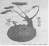

第 1 题 #
1.马克思主义哲学与唯心主义哲学、旧唯物主义哲学的根本区别在于：
A.坚持人的主体地位
B.坚持用辩证发展的观点去认识世界
C.坚持物质第一性、意识第二性
D.坚持从客观的物质实践活动去理解现实世界
点击查看答案
此题暂无可用答案。
考研政治 · questions · 2008
题号和章节目录由结构化数据生成。选项按卷面字母顺序显示；原标记保留在 JSON 中。
题目要求的。请在答题卡上将所选项的字母涂黑。
1.马克思主义哲学与唯心主义哲学、旧唯物主义哲学的根本区别在于：
此题暂无可用答案。
2.最近，由多国科学家组成的团队利用一台粒子加速器，让两束原子在一个圆环轨道上做高速运动，发现这些原子自身的时间确实比外界时间慢了。这项实验进一步证明了作为物质运动存在形式的时间具有：
此题暂无可用答案。
3.在听完一位成功的企业家讲课后，一些来自企业的学员感到有些失望，便问他：“你讲的那些内容我们也差不多知道，可为什么我们之间的差距会那么大呢？”这位企业家回答说：“那是因为你们仅是知道，而我却做到了，这就是我们的差别。”这句话表明了实践高于理论认识，因为实践具有：
此题暂无可用答案。
4.“文化蕴藏着巨大的力，这种‘力’不同于物理学上的‘力’，物理的‘力’是人类用来‘化’自然界的，文化的‘力’是用来‘化’自身的。”这一说法表明：
此题暂无可用答案。
5.马克思通过对资本主义生产中价值增殖过程的分析，把雇佣工人的劳动时间分为：
此题暂无可用答案。
6.某块土地，地租为200 万元，土地价格为4000 万元。若银行存款利息率不变，该土地的地租增加到300万元时，银行存款利息率和土地价格分别是：
此题暂无可用答案。
7.在完善社会主义市场经济体制过程中，要加快建立覆盖城乡居民的社会保障体系，其基本目标是：
此题暂无可用答案。
8.在孙中山的思想中，“平均地权”、“节制资本”属于：
此题暂无可用答案。
9.1927 年9 月下旬，毛泽东率领秋收起义的部队来到江西省永新县三湾村，进行了著名的三湾改编，确立了人民军队建设的根本原则。这一原则是：
此题暂无可用答案。
10.我国对个体手工业进行社会主义改造的主要方式是：
此题暂无可用答案。
11.我国社会主义改革是一场新的革命，其性质是：
此题暂无可用答案。
12.党的领导、人民当家作主和依法治国的统一性是由：
此题暂无可用答案。
13.为研究和完善国家法定节假日制度，国家有关部门按照国务院的部署，通过有关网站进行问卷调查，并在部分城市进行了电话调查。在广泛进行民意调查的基础上，经过一年多的研究论证，确定了新的节假日调整方案。这体现的执政理念是：
此题暂无可用答案。
14.民族精神是社会主义核心价值体系的重要内容之一，其核心是：
此题暂无可用答案。
15.党的十七大报告指出，我国新时期最显著的成就是：
此题暂无可用答案。
16. 在2007 年1 月1 日欧盟第六次扩大时正式加入欧盟的国家是：
此题暂无可用答案。
符合试题要求的。请在答题卡上将所选项的字母涂黑。多选或少选均不得分。
17.右边这幅漫画对于我们认识人与自然关系的警示意义在于：

此题暂无可用答案。
18.19 世纪英国作家惠兹里特说：“一个除了书本以外一无所知的纯粹学者，必然对书本也是无知的。”与这句话在内涵上相一致的名言还有：
此题暂无可用答案。
19.马克思主义哲学中的辩证法、认识论、历史观在本质上是一致的，体现这种一致性的公式有：
此题暂无可用答案。
20.随着科学技术和经济全球化的发展，人类的交往活动日益普遍和深化，交往作为人类特有的活动和存在方式，对社会发展具有越来越重要的作用。主要表现在：
此题暂无可用答案。
21.同一劳动在同一时间内，当部门劳动生产率提高时会使：
此题暂无可用答案。
22.通过对社会资本简单再生产实现过程中交换关系的分析，可以看出：
此题暂无可用答案。
23.为了保持物价总水平的稳定，国家实施宏观调控可以采取的货币政策手段有：
此题暂无可用答案。
24.为完善社会主义个人收入分配制度，确立生产要素按贡献参与分配是基于：
此题暂无可用答案。
25.在中国共产党的历史上，对毛泽东思想做出系统概括和阐述的党的文献有：
此题暂无可用答案。
26.关于民主革命时期富农身份的界定，下列选项中正确的有：
此题暂无可用答案。
27.新中国建立之际，毛泽东提出的外交方针有：
此题暂无可用答案。
28.党的十七大报告指出，深入贯彻落实科学发展观，必须坚持：
此题暂无可用答案。
29.党的十七大报告指出，十一届三中全会以来，中国共产党坚持马克思主义的思想路线，不断探索和回答的重大理论和实际问题是：
此题暂无可用答案。
30.人民代表大会制度是我国的根本政治制度，这是因为：
此题暂无可用答案。
31.2005 年，胡锦涛主席就新形势下发展两岸关系提出的原则性意见是：
此题暂无可用答案。
32.党的十七大报告指出，高举中国特色社会主义伟大旗帜，最根本的就是要坚持：
此题暂无可用答案。
33.2007 年2 月，胡锦涛主席在与苏丹总统巴希尔的会谈中提出，处理达尔富尔问题应该：
此题暂无可用答案。
纸相应位置上。
34.结合材料回答问题：
最近，四川省搞了一次“医患换位体验”活动，让医生以患者的身份挂号、排队、看病、拿药……结果，医生跑前跑后，既受累又受气，一名全程体验了“患者”的医生感慨道：“医生就像拿着个遥控器，把患者指挥得团团转，当患者确实很苦。”美国医生爱德华·罗森邦行医50 年，忽然患上了喉癌，当他重新审视医学、医院和医生时，感慨地说：“站在我病床边和躺在病床上所看到的角度完全不同。”他后来在《亲尝我自己的药方》一书中写道：“如果我能从头来过的话，我会以完全不同的方式行医，很不幸的是，生命不给人这种重新来过的机会。
多年前，有位年轻医生患上甲状腺病，由中国医学科学院著名头颈外科专家屠规益为他主刀。当手术结束时，屠教授低下身来说：“对不起，让您受苦了！”这是屠教授术后经常对病人说的一句话，虽然简短，却让这位年轻医生深感震撼。
著名医学家裘法祖早年从医，曾在老师的带领下，为一名中年妇女进行开腹手术。术后没几天，那名妇女就去世了，经解剖发现，患者的死亡与手术并无关系，当时，裘法祖的老师轻轻说了句，“她是4 个孩子的妈妈”，就是这句简单的话，让裘法祖至今念念不忘，他知道这句话包含了多少情感，懂得了医生的责任有多重大：医生不仅要看到人身上的病，更要看到生病的人。（根据人民日报有关文章整理）
（1）“医患换位体验”活动中蕴含着何种哲理？
（2）从人的本质属性说明为什么“医生不仅要看到人身上的病，更要看到生病的人”。
（3）你在现实生活中遇到类似医患关系的矛盾，按照矛盾辩证法该如何对待和处理？
（2）人是自然属性和社会属性的统一体，人的本质在于人的社会性。人类一切活动在本质上都体现着人与人的关系。因此医生在治病的过程中，既要“看病”，更要“看人”。（3 分）
（3）矛盾是客观、普遍存在的，要正视矛盾，不要回避矛盾；矛盾具有特殊性，要全面地具体地分析矛盾；用不同方法解决不同的矛盾是辩证法的基本要求，要用正确的方法去化解矛盾。（4 分）
此题暂无可用答案。
35.结合材料回答问题：
IBM 公司是世界上最大的信息工业跨国公司之一，从上世纪50 年代起致力于计算机行业，并很快在大型计算机业务上占据了统治地位。IBM 生产的计算机在技术上常常是最先进的，在某些情况下，他们即使不是最好的，但由于出色的服务和技术支持，他们仍有卓越的信誉。在整个60 年代和70 年代，虽然有Control data，Honeywell、Sperry Univac、Burroughs 和NCR 等企业的竞争，但这些公司都不是其对手，到1980 年为止，IBM 仍占据全球大型计算机市场超过80%的份额。大型计算机是IBM 的“金母鸡”，毛利高达70%。
80 年代，随着个人计算机和工作站所连接成的网络逐渐取代大型机，日本、欧洲共同体和美国国内许多资本、技术雄厚的企业纷纷涉足这一高风险、高效益的领域。在与苹果、康柏、东芝、戴尔等企业激烈竞争中IBM 公司开始走下坡路。
迫于竞争的压力，90 年代IBM 公司进行了组织改造以降低成本、进行资产重组和资本运营，使公司的股票价格扶摇直上；进行经营战略转型，在保持计算机硬件领域领先地位的同时，成功地实现了向软件服务等高利润领域的转移；实施竞争战略调整，全面提升了企业竞争力，重塑其昔日的辉煌。
IBM 确立的战略目标是：在所处产业的所有领域都能实现高增长率；在所有领域都有技术和质量卓越的产品，并发挥领导作用；在生产、销售、服务和管理的所有业务活动上，实现最高的效率；确保企业成长所需要的高利润，以便在产业中具有不可动摇的地位。
目前，计算机技术正在向更加“开放型系统”的方向发展。往往主机是一个公司制造的，显示器是另一个公司的，打印机又是第三个公司的，软件是第四个公司的，这些组合起来使整个系统得以运行。在新的技术基础上，计算机行业的企业组织趋向网络化发展，IBM 公司面临着新的竞争挑战。IBM 公司在垄断和竞争中寻求着未来的发展。
(摘编自【美】J·E 斯蒂格利茨：《<经济学>小品和案例》及新华网有关资料)
（1）用IBM 的案例说明垄断和竞争的关系。
（2）从IBM 公司的发展过程总结垄断资本条件下竞争的新特点。
此题暂无可用答案。
36.结合材料回答问题：
从党的建立到抗日时期，中间有北伐战争和十年土地革命战争。我们经过了两次胜利，两次失败。北伐战争胜利了，但是到一九二七年，革命遭到了失败。土地革命战争曾经取得了很大的胜利，红军发展到三十万人，后来又遭到挫折，经过长征，这三十万人缩小到两万多人……在民主革命时期，经过胜利、失败，再胜利、再失败，两次比较，我们才认识了中国这个客观世界。在抗日战争前夜和抗日战争时期，我写了一些论文，例如《中国革命战争的战略问题》、《论持久战》、《新民主主义论》、《<共产党人>发刊词》，替中央起草过一些关于政策、策略的文件，都是革命经验的总结。那些论文和文件，只有在那个时候才能产生，在以前不可能，因为没有经过大风大浪，没有两次胜利和两次失败的比较，还没有充分的经验，还不能充分认识中国革命的规律。过去，特别是开始时期，我们只是一股劲儿要革命，至于怎么革法，革些
什么，哪些先革，哪些后革，哪些要到下一阶段才革，在一个相当长的时间内，都没有弄清楚，或者说没有完全弄清楚。
——毛泽东《在扩大的中央工作会议上的讲话》(1962 年1 月30 日)
（1）毛泽东在20 世纪60 年代初回顾中国共产党在民主革命时期艰难地但是成功地认识中国革命规律的这段历史，是要说明什么问题？
（2）在改革开放和社会主义现代化建设取得举世瞩目成就的今天，如何看待以毛泽东为主要代表的中国共产党人在社会主义建设方面的艰辛探索？
此题暂无可用答案。
37.结合材料回答问题：
在《人民日报》“说句心里话”栏目，重庆市城乡统筹综合改革先行示范区的一位农民说出了这样的心里话：
这些年，党和政府在想办法给农民更多实惠，直补种粮农民，免除了农业税，让我们参加了新型农村合作医疗，这些以前真是想都不敢想啊！
现如今，我们这个村先搞了“农民转市民”试点，全村131 人今年全部将农村户口转为城镇户口，由农民开始变为市民啦！
我家承包的土地自愿流转给集体统一经营，每亩补贴我们青苗费4880 元，以后每年按照亩产1000 斤粮食的市场价补偿我们。村里把流转出来的土地集中起来，引进一些现代农业项目，经营赚了钱，我们可以分红。这些项目优先从村里招聘劳动力，我儿子就可以回来打工，离我们更近了。以前大家都出去打工，地荒在那里，流转以后可以提高土地利用效率，我们又能从中受益，对村里经济也有好处。
我们现在住的房子是17 年前盖的，已经破旧了。根据农民转市民的政策，房子拆迁以后，会补偿给我们两套75 平方米的楼房，新房子离这不远，政府承诺我们明年9 月搬家。
最高兴的是变市民以后，参加了基本养老保险，像我们这样的老人，一次性缴4320 元钱，男的从60岁起，女的从55 岁起，就可以每个月领156 元养老金。
（1）结合我国农村改革发展的历史进程，说明为什么一些过去农民“想都不敢想”的问题现在已经解决或正在解决。
（2）通过该示范区的变化，指出建设我国社会主义新农村的主要途径。
此题暂无可用答案。
38.本题为选做题，请在Ⅰ、Ⅱ两道试题中选取其中一道作答，若两题都回答，只按第Ⅰ道试题的成绩计入总分。
2007 年是“卢沟桥事变”70 周年，也是中日邦交正常化35 周年。温家宝总理应邀于4 月中旬对日本进行了正式访问。在两国发表的《中日联合新闻公报》中，确认双方将继续遵循《中日联合声明》、《中日和平友好条约》和《中日联合宣言》的各项原则，努力构筑“基于共同战略利益的互惠关系”。温总理在日本国会众议院发表的演讲中，引用日本的谚语“尽管风在呼啸，山却不会移动”形容中日关系，引起日本国会议员们的广泛共鸣。
日本防卫大臣石破茂在为中国军舰“深圳”号访日举行的招待会上致词说，实现两国军舰互访，必将促进两国防务领域的深入交流，进一步提高彼此之间的信任关系，推进双方战略互惠关系向前发展。（摘自人民日报、新华网）
日本首相福田康夫就职后明确表示，他作为首相不会去参拜靖国神社。他在就中日邦交正常化35 周年致温家宝的贺信中说：日中两国在地理上是无法迁移的“一衣带水”的邻邦。不论今后国际形势如何变化，日中关系对两国而言乃为最重要的双边关系之一却是不会改变的。我愿意致力于构筑日中战略互惠关系。
曾480 余次访华的日中协会理事长白西绅一郎认为，发展日中战略互惠关系，除了要“政治、经济两个轮子一起转”之外，还应特别注重扩大日中民间关系，这样才能夯实日中战略互惠关系的基石。（摘自人民日报、东方早报）
据日本海关统计，2007 年1 月～9 月，日中双边贸易额为1715.3 亿美元，同比增长12.1%。其中，日本向中国出口786.3 亿美元，增长17.8%，日本自中国进口929.0 亿美元，增长7.7%，日本贸易逆差142.7
亿美元，减少26.7%。中国继续保持日本第二大出口目的地和第一大进口来源国的地位。(摘自商务部网国别数据)结合材料回答问题：
（1）中日两国“战略互惠关系”的基本精神是什么？
（2）分析温家宝总理用“尽管风在呼啸，山却不会移动”形容中日关系的寓意。
联合国政府间气候变化专门委员会在2007 年2 月2 日就气候问题发出了警告：从现在开始到2100 年，全球平均气温的“最可能升高幅度”是1.8 摄氏度至4 摄氏度，海平面升高幅度是18 厘米至58 厘米。美国著名智库国际战略研究所的报告认为，“如果温室气体排放仍得不到控制，其灾难性后果不亚于发生一场核战争。”
现在国际上担心中国很快就会成为世界头号污染物排放国；而且再过25 年，中国温室气体排放量将超过其他发达国家总和。……中国的高速崛起，会用掉全球大半的能源，加重能源危机；由于巨大的污染物和温室气体的排放量，中国将成为全球最大的污染源；中国是气候变化的主要威胁。（摘自纽约时报）
从1950 年到2002 年，中国化石燃料燃烧排放的二氧化碳占世界同期累计排放量的9.33%(同期发达国家排放量占77%，而此前的200 年间，发达国家更是占到95%)；1950 年到2002 年的50 多年间，中国人均排放量居世界第92 位；从单位GDP 二氧化碳排放的弹性系数看，1990 年到2004 年的15 年间，单位GDP每增长1%，世界平均二氧化碳排放增长0.6%，中国增长0.38%。
(摘自国家发改委主任马凯在国务院新闻办新闻发布会上的讲话)2007 年12 月14 日，刚刚参加完印尼巴厘岛联合国气候变化大会的世界银行行长佐利克来到中国。针对近年来中国为节能减排所付出的努力，佐利克说，中国已经形成强烈共识，在发展经济的同时更关注环境保护，并提出了科学发展观。他认为，中国政府在降低能耗、提高车辆能效标准，以及发展全球碳市场等方面发挥了重要作用。……这不仅对中国本身发展意义重大，也将为全球应对气候变化挑战做出贡献。(摘自中国广播网有关报道)结合材料回答问题：
（1）上述材料中所反映的气候变化的严峻事实对我们理解自然环境在社会发展中的作用有何启示？
（2）评析“中国气候威胁论”并指出中国应对气候变化问题的战略选择。
此题暂无可用答案。